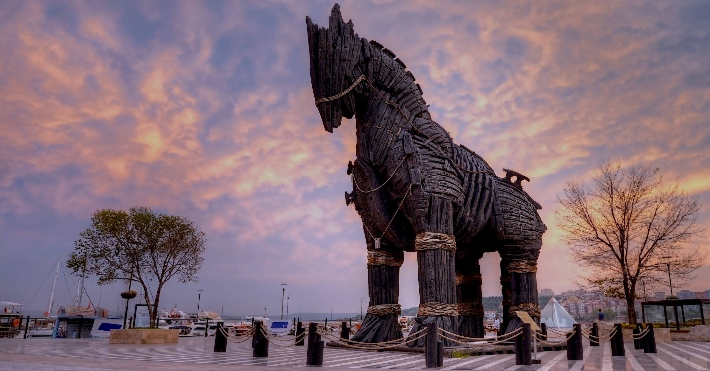

Çanakkale'de Gezilecek Yerler:
Çanakkale, tarihi ve doğal güzellikleriyle zengin bir bölgedir. Gezilecek yerler arasında:
- Çanakkale Şehitleri Anıtı ve Gelibolu Yarımadası Tarihi Milli Parkı
- Kilitbahir Kalesi
- Troya Antik Kenti
- Assos Antik Kenti
- Bozcaada ve Gökçeada
- Anzac Koyu ve Anzak Koyu Savaşları Alanı
Çanakkale Şehitleri Anıtı, Gelibolu Yarımadası Tarihi Milli Parkı içinde yer alan ve Çanakkale Savaşı'nda hayatını kaybeden askerleri anmak amacıyla inşa edilmiş büyük bir anıttır. 1915 yılında yaşanan savaşta şehit düşen Türk ve müttefik askerlerini anmak için yapılmıştır. Anıt, Gelibolu Yarımadası'nda stratejik bir noktada yer alır ve ziyaretçilere Çanakkale Savaşı'nın izlerini ve tarihini daha yakından görmelerini sağlar. Milli Park, tarihi ve manevi öneme sahip birçok noktayı içerir ve ziyaretçilere tarihi bir yolculuk sunar.
Kilitbahir Kalesi, Çanakkale Boğazı'nın Gelibolu Yarımadası'na bakan kıyısında bulunan Osmanlı dönemine ait bir kale yapıdır. Sultan Abdülmecid tarafından 1857-1863 yılları arasında inşa ettirilmiştir. Kale, Boğaz'ın savunmasını sağlamak amacıyla yapılmıştır. Tarihi bir stratejik öneme sahip olan Kilitbahir Kalesi, Çanakkale Savaşı'nda da önemli bir rol oynamıştır. Günümüzde ziyaretçilere açık olan kale, tarih meraklıları ve manzara severler için popüler bir turistik noktadır.
Troya Antik Kenti, Çanakkale'nin Tevfikiye köyü yakınlarında yer alır ve efsanevi Truva Savaşı'nın geçtiği yer olarak bilinir. UNESCO Dünya Mirası Listesi'nde yer almasıyla arkeolojik açıdan büyük öneme sahip olan bu antik kent, dünya edebiyatının en önemli eserlerinden biri olan Homeros'un İlyada destanıyla ünlüdür. Troya'nın dokuz farklı yerleşim katmanına sahip olduğu bilinmektedir. Antik kent, ziyaretçilere antik yaşamı ve yapıları keşfetme fırsatı sunar. Her yıl binlerce turistin ziyaret ettiği Troya, tarih ve mitoloji severler için önemli bir turistik mekandır.
Asos Antik Kenti, Çanakkale'nin Ayvacık ilçesinde bulunan ve MÖ 7. yüzyılda Miletoslular tarafından kurulmuş bir antik kenttir. Ticaret merkezi olmasının yanı sıra, Aristoteles'in de burada öğretim faaliyetlerinde bulunduğu bilinmektedir. Günümüzde turistik bir cazibe merkezi olarak ziyaretçilerini ağırlamaktadır.
Bozcaada ve Gökçeada, Türkiye'nin Çanakkale iline bağlı olan iki önemli ada konumundadır.
Bozcaada: Ege Denizi'nde, Çanakkale Boğazı'nın girişinde bulunan Bozcaada, Türkiye'nin üçüncü büyük adasıdır. Eski adıyla Tenedos olarak bilinen ada, tarihi ve doğal güzellikleriyle ünlüdür. Kaleiçi, Rum Mahallesi, Aya Yorgi Kilisesi gibi tarihi yapılar ve Ayazma, Habbele, Sulubahçe gibi plajları turistlerin ilgisini çeker.
Gökçeada: Türkiye'nin en büyük ikinci adası olan Gökçeada, Ege Denizi'nde yer alır. Tarihi ve kültürel zenginliklerin yanı sıra doğal güzellikleriyle de dikkat çeker. Kaleköy, Dereköy gibi köyleri, Ağlayan Ağaç, Kefaloz gibi doğal alanları ve Kuzulimanı, Aydıncık gibi plajları turistlerin ilgisini çeker. Ayrıca Gökçeada, Türkiye'nin sığınak adası olarak da bilinir.
Anzac Koyu, Çanakkale Savaşı'nda ANZAC askerlerinin 25 Nisan 1915'te Gelibolu Yarımadası'na yaptığı çıkartmanın merkeziydi. Bugün, savaşın anısını yaşatan bir anıt alanı olarak ziyaret edilmektedir.